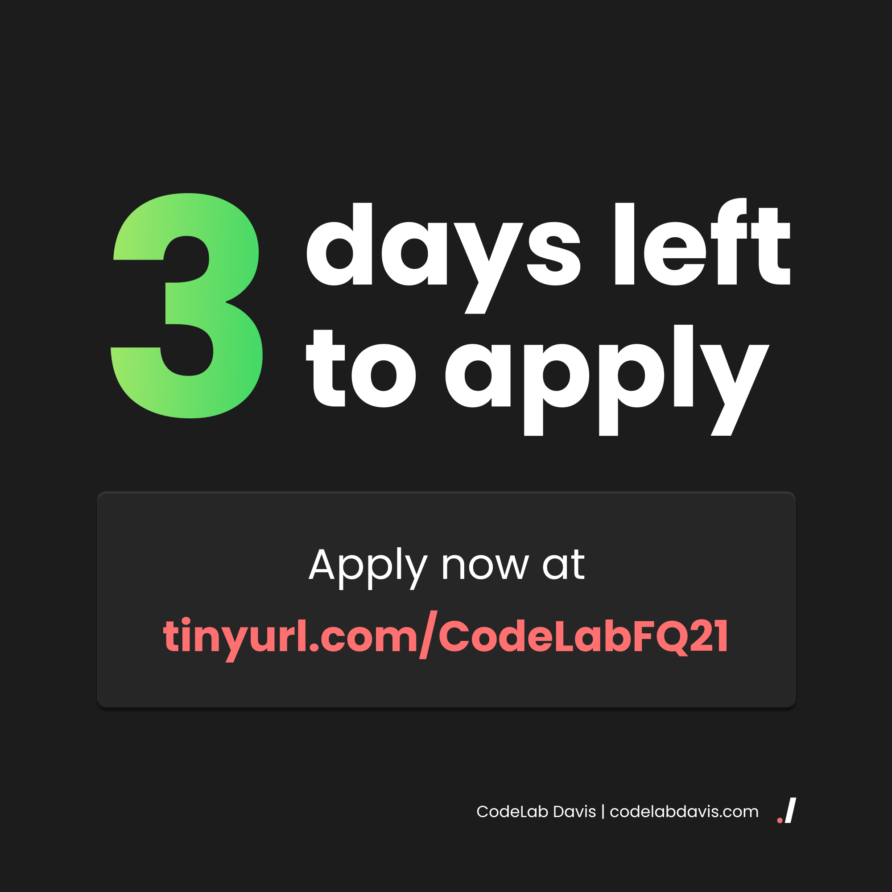
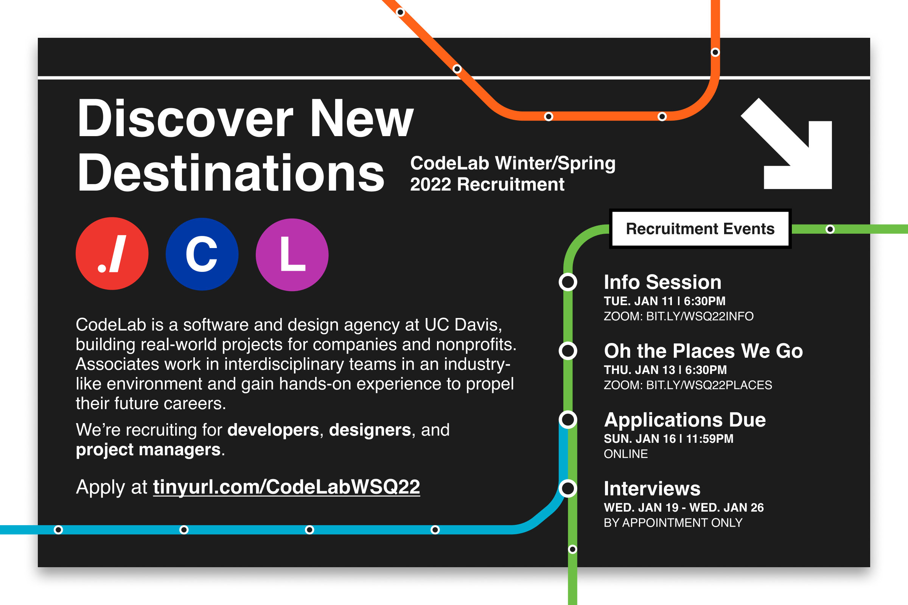
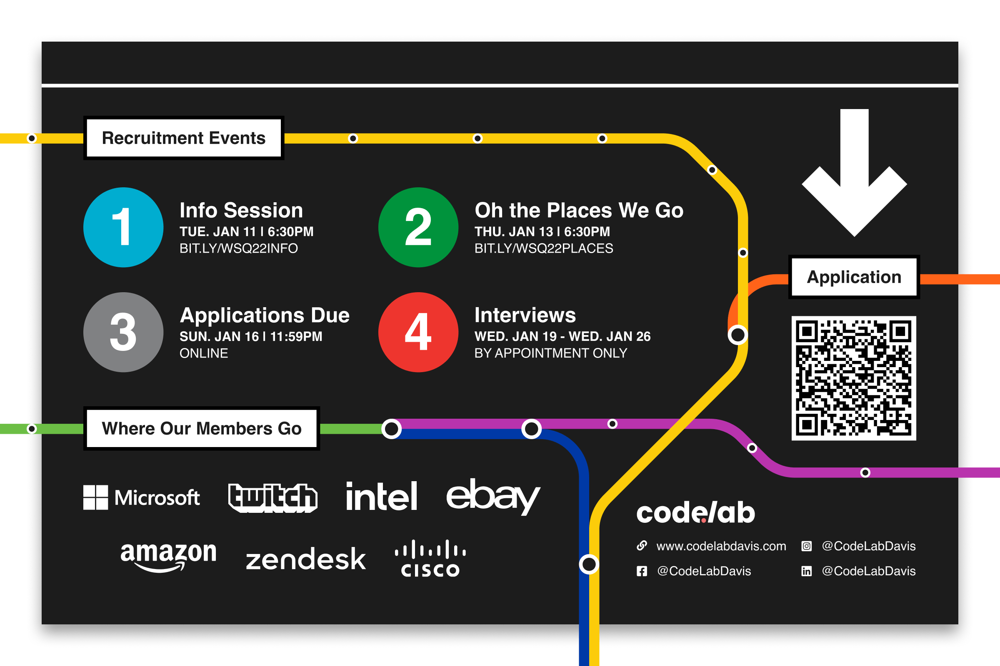
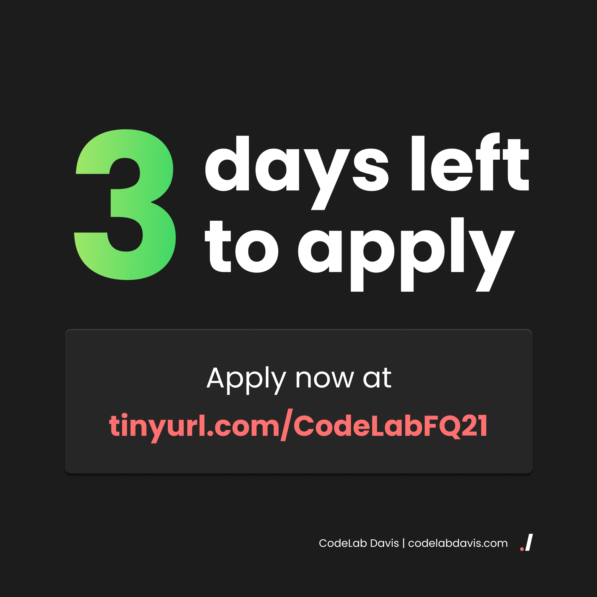
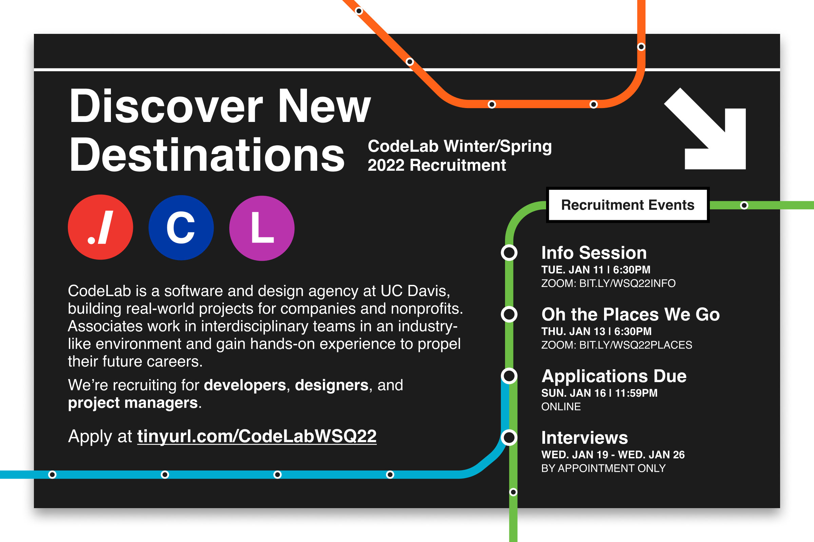
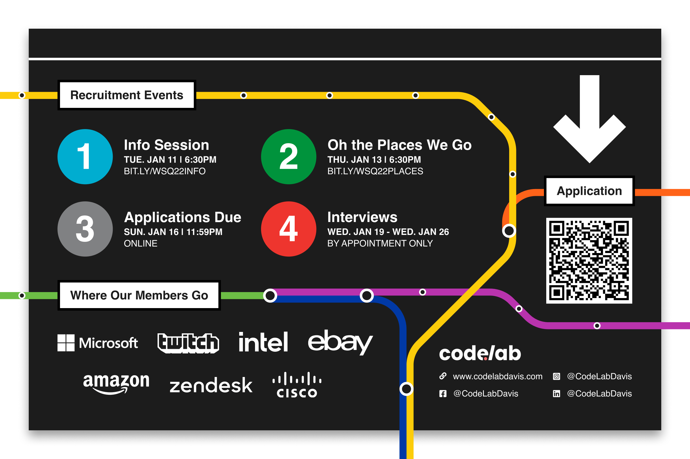

CodeLab Brand Identity
Updated 6.17.2022
My Role
In my first two years of CodeLab, I shaped the organization’s image through my role as the Vice President of External. I handled all communications for the organization—social media, written article content, our website, and the design of many marketing assets.
As a new organization, branding was a blank slate. It became a fun challenge to apply my creativity while still maintaining a professional image.
To learn more about the organization, view my CodeLab Community page.
Logo
First, we needed a logo. After playing around with various designs, we selected the design below. The dot-slash refers to the syntax for the current working directory, and thus the syntax used to execute a compiled script in a UNIX environment.
Website
In Summer 2021, I redesigned the website, which is one of my favorite wireframes I've created to date.
In Fall 2021, I led and mentored a student team to develop the site in React. In addition to teaching the students frontend development, I planned and delegated tasks over a rapid 6 weeks of agile development. It was incredible seeing my team grow their development and communication skills throughout the quarter, and I am so proud to see what they were able to create.The website is currently live at codelabdavis.com.
Flyers
Even after I moved out of the formal graphics roles on the board, I continued to get involved in design occasionally. Here are just a handful of the assets I created over the years. You’ll notice the recruitment flyers take a step away from the brand; I took more creative liberties with those.
 




